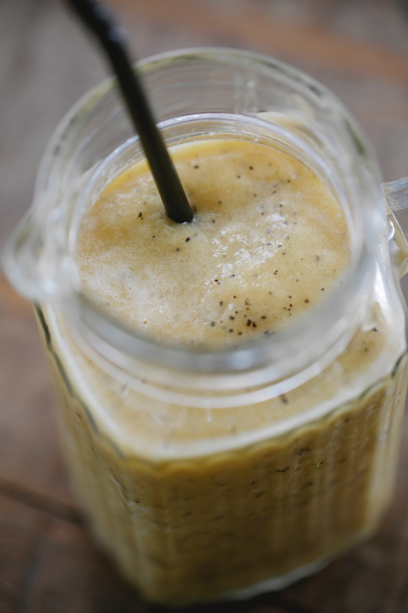

Smoothie

Ingredientes
1/2 Manzana
2 Bananas
6 Galletas de Maíz
200 ml de jugo de anana
200 g de crema de leche
1 puñado de nueces caramelizadas
Preparación
En primer lugar, pelamos ½ manzana y los 2 plátanos. Troceamos la fruta y la pasamos a un vaso apto para batidora o a una batidora americana.
Por último, vertemos los 200 ml de zumo de piña y batimos hasta integrar todos los ingredientes.
Servimos en vasos altos y decoramos con un copete de nata montada y un puñado de nueces caramelizadas.